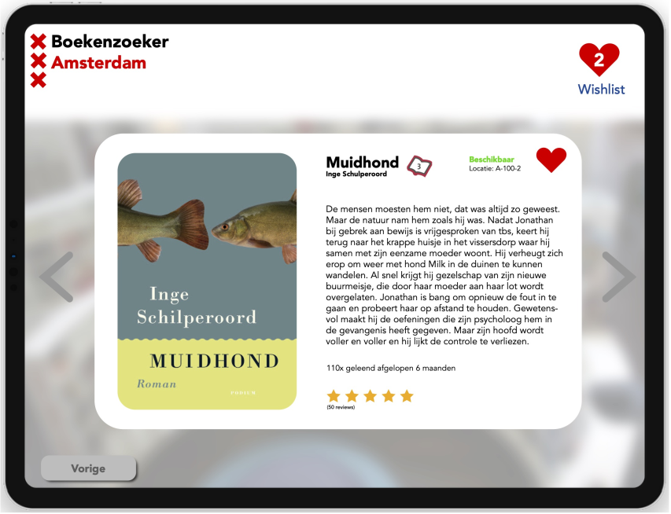
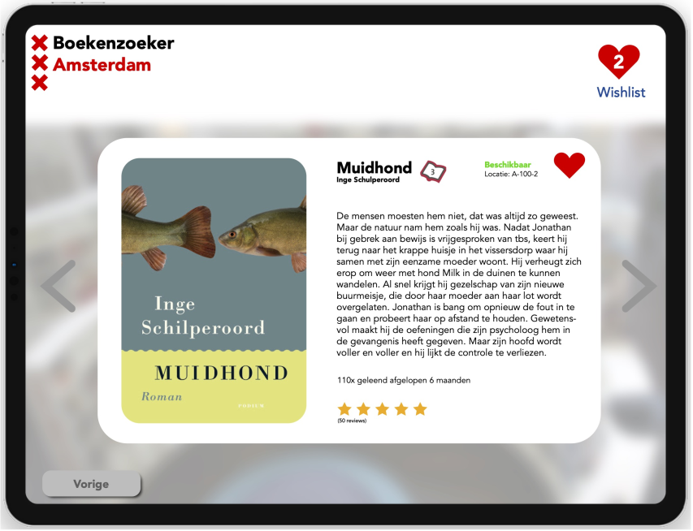

De opdracht
Voor mijn opleiding heb ik de opdracht gekregen om een 'visual design' te maken voor een user interface. Dit design moest uit minimaal 5 schermen bestaan en moest mogelijkheid geven tot het zoeken van één of meerdere boeken uit de schoolbibliotheek, voor scholieren uit de onderbouw van het voortgezet onderwijs (12-15 jaar oud). Een vereiste was het toepassen van de Amsterdam.nl huisstijl, maar dan toegespitst op de doelgroep. Het resultaat: een niche huisstijl. Per vereist scherm was er een lijst aan vereisten waar je als ontwerper aan moest voldoen.
Mijn oplossing
Mijn oplossing bestaat uit een visual interface design met een niche huisstijl, gebasseerd op de huisstijl van Amsterdam.nl. Ik heb kleurcodes van de website gehaald. Het gaat hier om rood, blauw en wit. Op de achtergrond is de OBA te zien met een aantal boekenkasten. Dit zorgt voor een goede look and feel van de interface. Per scherm doorloopt de gebruiker een keuzeproces stap voor stap, door middel van een vraag & antwoord procedure. Zo wordt het proces gemakkelijker te doorlopen voor de (jonge) gebruiker, zonder dat de gebruiker een cognitieve overload te verduren krijgt. De knoppen die een gewenste actie hebben in het proces kleuren rood (zie de 'volgende' knop). In dit vak heb ik geleerd om design principles toe te passen. Denk hierbij aan progressive disclosure, one primary action per screen, gestaltprincipes. Gedurende de 8 weken dat ik hier mee bezig geweest ben, heb ik constant iteratieslagen doorgemaakt met als resultaat: 7 verschillende versies van de interface. Aanleiding voor deze iteratieslagen was feedback van zowel peers als van de docent.
 

Gebruikte methodes
- Design principles
- User interface elements
- Organisatiestructuur